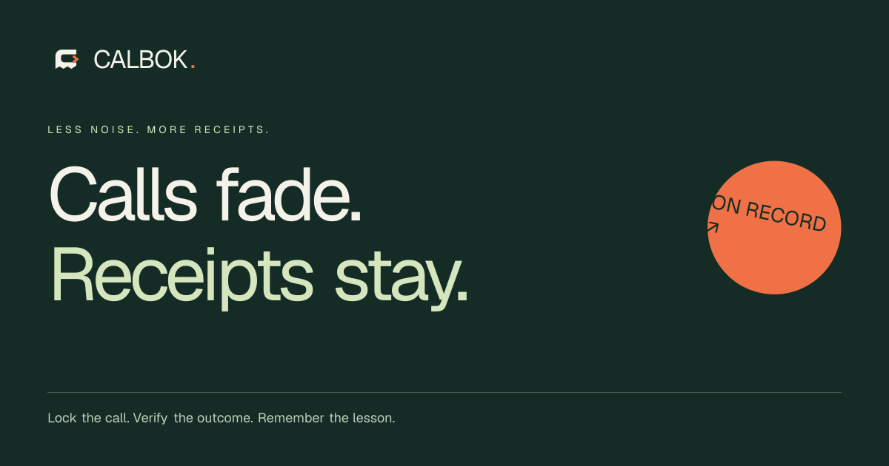

ON RECORD / 2026
Calls fade.
Receipts stay.
The verifiable record behind market predictions. Built around the original claim, the actual outcome, and the context worth keeping.
A conversation becomes a record.
An open C. A receipt edge. An orange arrow that carries the call forward.
Small mark. Lasting memory.
A compact symbol for the workspace, receipt header, app icon, and social avatar.
Forest. Paper. A signal.
FOREST
#142C25
#142C25
RECORD
#174C3C
#174C3C
PAPER
#F4F2E9
#F4F2E9
RECEIPT
#FFFEF8
#FFFEF8
SIGNAL
#EF7145
#EF7145
SAGE
#D5E6BF
#D5E6BF
Put it on record.
Space Grotesk for headlines.
DM Sans for the things worth reading.
IBM PLEX MONO / THE EVIDENCE
Less noise.
More receipts.
Lock the call. Verify the outcome. Remember the lesson.
Direct. Curious. Accountable.
Ready to share.

Download mark / SVG ↗Download logo / SVG ↗Download artwork / SVG ↗Download social card / PNG ↗


Use generous clear space. Keep the mark's proportions. Pair outcome colors with text. Let actual records supply the performance numbers.